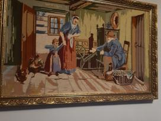
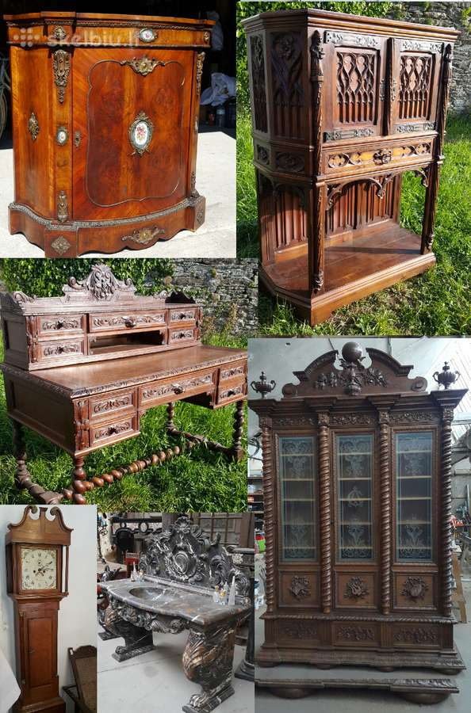
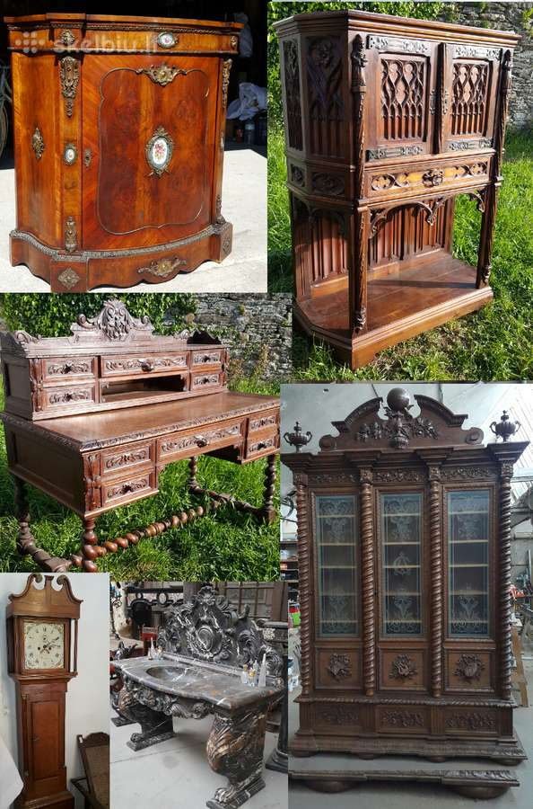

Skyrius: Antikvariniai daiktai Spalio Mėn 2020
2020.10.30 04:30

Teatras Filmus Televizija Humoras Muzika Lošimai
Antikvariniai daiktai
FilmusMelodraminė serija Ir kamuolys grįš : serijos aprašymas, simbolių biografija
2020-10-30 TeatrasVisi Kursko teatrai
2020-10-30 FilmusHannah Simon: aktoriaus gyvenimas ir darbas
2020-10-30 FilmusŠnipų vaikų aktoriai: žaibiškos sėkmės ir visiško užmaršties?
2020-10-30 FilmusHario Poterio visatos simboliai: Igoris Karkarovas. Biografija ir įdomūs faktai
2020-10-30 FilmusRosanna Arquette: biografija ir filmografija
2020-10-30Numizmatistų susidomėjimas: SSRS monetų vertė
Antikvariniai daiktaiTikriausiai daugelis iš mūsų vis dar turi tam tikrą kiekį Sovietų Sąjungos laikų banknotų namuose. Kai kurioms šioms monetoms ir vekseliams tenka istorija, kažkas saugo juos lyrinių praeities prisiminimų labui, ir kas nors tikisi, kad per vieną dieną visi bus pertraukti ir stengiasi išsiaiškinti SSRS monetų vertę. Iš tiesų, kai kur
Šautuvas Henry 1860: aprašymas, charakteristikos, istorija
Antikvariniai daiktaiŠautuvai „Henry“ su laikikliu („Lever Action“ anglų kalba) laimėjo neįtikėtiną populiarumą, tik apskritai, jie šiek tiek atsilieka nuo gerai žinomo Kalashnikovo. Pažymėtina, kad, nepaisant populiarumo, tokio tipo statinės nebuvo oficialiai ginkluotos bet kur, nors ir patyrė nemažai karinių istorijų. Tikriausiai taip atsit
Auguste Renoir paveikslėlis buvo pavogtas iš aukciono sienos
Antikvariniai daiktaiVieną, Austrijos sostinę, lapkričio 26 d. Sukrėtė nežinoma nepaprastoji padėtis: iš seniausių ir didžiausių žemyninėje Europoje „Dorotheum“ aukciono namų buvo pavogta tapyba „Persijos įlankos, jūra, žalieji uolos“. Jos autorius - Pierre-Auguste Renoir, prancūzų impresionistų tapytojas. Ekspertai apskaičiavo, kad
Retos SSRS porceliano figūrėlės (nuotrauka)
Antikvariniai daiktaiTikriausiai kiekvienas namas išlaiko vieną ar kitą dalyką, primenantį sovietų laikus. Tokie artefaktai kažkada buvo mūsų senelių, mūsų tėvų ir apskritai visų tų, kurie vis dar sugebėjo gyventi pagal sovietų valdžią, gyvenime. Tarp labiausiai paplitusių gizmos galima nustatyti sovietinius rublius ir monetas, ženklelius ir medalius, plakatus, žaislus, stalo įrankius, SSRS porceliano figūras ir daug daugiau. Sovietų socialistų resp
Aukcionas Volmar . Numizmatikos rinkos ypatybės
Antikvariniai daiktaiŠiuolaikinė numizmatikos rinka yra sąlyginai suskirstyta į du sektorius: apatinę ir viršutinę. Mažesnį sektorių atstovauja rinkos, parduotuvės ir paprasti interneto ištekliai. Viršutiniame numizmatikos rinkos segmente - aukcionai ir daug pinigų. Šiuo metu numizmatikai gali žymiai išplėsti savo bendravimo ribas dėl interneto išteklių, iš kurių vienas yra „Walmar“ numizmatikos aukcionas. Tai unikalus šaltinis sav
Vokiškas šalmas: pokyčių istorija
Antikvariniai daiktaiSunku pervertinti šalmų svarbą paprastiems kareiviams, kartais tai vienintelė galimybė išgelbėti. Galų gale, šalmas gali apsaugoti galvą nuo bombų, kriauklių, o kai kuriais atvejais net iš kulkų. Jo taikymas buvo ypač aktualus per Pirmąjį pasaulinį karą: dažnai buvo vykdomi veiksmai tranšėjose, apimančiose kareivių kūnus, tačiau galva buvo puikus tikslas. Nuo 1916 m. Vokiečių kar
Broliai Nyderlanduose rado daugiau nei 100 senovės romėnų monetų
Antikvariniai daiktaiPirmadienį, lapkričio 26 d., Nyderlandų kultūros paveldo apsaugos agentūra pranešė apie nuostabų atradimą. Wim ir Niko van Schaik surado lobį - romėnų monetas (daugiau nei šimtą vienetų). Šis įvykis įvyko praėjusiais metais. Broliai van Schaik, ginkluoti savo metalo detektoriumi, ieškojo senovių. Vertingas atradimas
Kas yra retas dalykas?
Antikvariniai daiktaiPerkant naują namą, mes stengiamės greitai atsikratyti senų šiukšlių, padaryti madingus remontus, įsigyti gražių naujų baldų. Bet kai supakuojame nereikalingų daiktų maišus, rizikuojame ištrūkti iš tikrųjų retų daiktų. Nenuostabu, kad jie sako, kad naujasis yra gerai pamirštas. Jei pirmiausia vaikšč
10 keistų išradimų, kurių reikia praeityje
Antikvariniai daiktaiKai Garry Dahl įdėjo akmenį į kartoninę dėžutę ir pradėjo jį parduoti kaip augintinį, 70-ųjų dešimtmečio žmonės prarado kolektyvinį protą. Per daugelį metų mes pažvelgiame į šį keistą išradimą ir stebime, kas galėtų pritraukti pirkėjus? Pažvelkite į neįprastus praeities išradimus, kad suprastumėte, kokiam tikslui jie buvo skirti. Amfibinis dviratis Amfibijos dvira
Ką senovės graikų skulptoriai naudojo skulptūrų spalvinimui
Antikvariniai daiktaiAntikvarinės statulos jų kūrimo metu nebuvo tokios šviesios kaip dabar. Naudojant įvairius metodus, klasikinis archeologas Vincenzas Brinkmannas atkurė pradinę graikų ir romėnų statulų išvaizdą. Antikvarinė polichromija Originalios antikvarinių statulų spalvos buvo tokios unikalios savo stiliumi ir ryškiomis spalvomis, kad žmonėms, kurie yra įpratę matyti šiuos meno objektus tokia forma, kuria jie šiandien eksponuojami, įsivaizduoti skirtumų mastą. Išsamiai išnagrinėjus kl
Vintage rankų darbo žiedai. Antikvariatas
Antikvariniai daiktaiŽiedai - kažkas daugiau žmonių gyvenime nei tik gražūs papuošalai. Apvali forma su skylute viduje simbolizuoja amžinybę, apsaugą, laimę. Šis priedas ne visada buvo naudojamas kaip ornamentas ir turi šaknis senovėje. Anksčiau antikvariniai žiedai papuošė tauriųjų žmonių rankas ir tarnavo kaip atpažinimo ženklas, nurodantis statusą arba priklausantį jo savininko gentims. Nuo žiedo istorijos Kai
Prarastos karalystės ir laivai dykumoje: 10 nuostabių metų Biblijos atradimų
Antikvariniai daiktaiRemiantis istoriniais duomenimis, pirmosios gyvenvietės Šventojoje žemėje pasirodė bent prieš 10 000 metų. Ši vieta yra derlinga archeologams. Žodžiu kiekvieną mėnesį naujų kelių ar gyvenamųjų pastatų statybos metu darbuotojai susiduria su ankstesnių civilizacijų archeologiniais objektais. 2018 metai nebuvo
Australijos skulptoriaus metalo laužo gyvūnų karalystė
Antikvariniai daiktaiŠis savarankiškai mokantis menininkas iš Australijos sukuria nuostabius metalinius gyvūnus, kurie, atrodo, ketina atgaivinti ir paleisti. Skulptorius naudoja labiausiai paplitusį metalo laužą. Idėja Autorius paprasčiausiai paaiškino savo pasirinktą medžiagą. Jis yra ūkininko sūnus, todėl naudojo tai, kas yra prieinama, ir daryti viską, kas įmanoma. Ryan Reynolds sa
Mergaitė praleidžia savo dienas ieškodama lobių paplūdimyje, ir tai ji rado
Antikvariniai daiktaiVasara, jūra ir paplūdimys! Šis nuostabus vasaros atostogų laikas pakrantėje išlieka mūsų atmintyje ilgą laiką! Tai puiki galimybė atsipalaiduoti ir įkrauti akumuliatorius per visus metus! Iš atostogų atnešime daug suvenyrų, o vaikai puoselėja pakrantės, kriauklių, jūros stiklo ir įvairių kitų daiktų turtus. Ką žmonės ras krante Į
3 kapeikai 1924 m .: aprašymas, istorija, kaina
Antikvariniai daiktaiMonetos, kurių nominalioji vertė - 1924 m. Jų kaina nuolat auga, o senų monetų rinkoje jie laikomi gera investicija. Atsiskyrusieji egzemplioriai jau tampa kolekcijos retenybe, už kuriuos kolekcionieriai iš tikrųjų medžioja. Nuo altyn iki trijų kapeikų 1924 m. Pradėjo reguliariai išleisti SSRS monetas. Kadangi 3 ce
Stradivariaus smuikas ir jo istorija
Antikvariniai daiktaiPraėjo trys šimtmečiai nuo didžiųjų italų styginių dainininkų Antonio Antonio Stradivari mirties, o jo instrumentų priėmimo paslaptis nebuvo atskleista. Jo sukurtų smuikų garsas, kaip ir angelo dainavimas, pakelia klausytoją į dangų. „Stradivarius“ jaunimas Kaip vaikas, Antonio bandė savo balsu išreikšti tai, kas buvo paslėpta jo širdyje, tačiau berniukas neveikė labai gerai ir žmonės tiesiog juokėsi. Keistas vaikas nuolat su juo
Talentingas fotografas giria albinosų hipnotinį grožį
Antikvariniai daiktaiKaip pats pats fotografas sakė, idėja sukurti albino žmones vienijančią fotografijos projektą jau seniai atėjo į jį. Jų įkvėpė šių neįprastų žmonių hipnotinis grožis. Išvaizda, kurioje yra albinas, man yra unikali ir be galo vertinga, tarsi jie būtų pasakų pasaulių ar legendų herojai. Puikus albinosų pa
Šios keistos relikvijos
Antikvariniai daiktaiKiekvienoje religijoje yra tradicija garbinti gerbiamų šventųjų relikvijas. Bet jei tikintiesiems yra natūralu, kaip galima paaiškinti gana sekuliarių relikvijų, kaip Einšteino ar Napoleono varpos akį, dievinimą? Galia - su plaktuku? Nepriklausomai nuo mūsų tikėjimo po gyvenimo, vargu ar niekas iš mūsų sutiktų, kad po jo mirties mirusiojo kūno fragmentai eBay'e buvo po plaktuku. Straipsnio prieža
Ar muziejų artefaktai turėtų būti grąžinti į šalis, iš kurių jie buvo atvežti?
Antikvariniai daiktaiSimon Jenkins - karališkosios literatūros draugijos narys, žurnalistas, sensacingų istorijų ir architektūros knygų autorius, nurodo Prancūzijos meno istoriką Andre Malraux kaip instituciją, teigdamas, kad muziejus visada buvo dirbtinė koncepcija, iškreipianti iš konteksto pašalintų objektų suvokimą. Jis teigia, kad
174 metų Afrikoje rastas Charles Dickens portretas
Antikvariniai daiktaiXIX a. Pabaigoje britų menininkas Margaret Gillis sukūrė Charleso Dickens portretą. Tačiau portretas buvo prarastas ir bandė jį rasti nieko, ir ilgą laiką atrodė, kad Margaret Gillis kūrinys dingo amžinybėje ir niekada nebus rastas. Ir šiais metais tapyba, kuri dabar kainuoja ketvirtadalį milijonų dolerių, buvo nustatyta valant namą pardavimui Pietų Afrikos Pietermaritzburge. Iš šiukšlių krūvo
Kaip valyti monetą namuose nuo nešvarumų ir apnašų?
Antikvariniai daiktaiNumizmatika yra madingas hobis. Kartais būtina valyti ir šiuolaikines monetas, nudažytas dėl vienos ar kitos priežasties. Kokias priemones naudoti norint pašalinti teršalus nei pašalinti oksidaciją? Kaip valyti monetą saugiai ir teisingai nustatyti metalą, iš kurio jis pagamintas? Pirminis apdorojimas Jums reikia pradėti nuo nešvarumų pašalinimo. Visi metalai y
XVIII a. Rusų ikonos stilius
Antikvariniai daiktaiKrikščionybės ikonografija buvo laikoma viena iš labiausiai išsivysčiusių meno formų. Ir jei šiandien vertiname XVIII a. Piktogramas estetiniu požiūriu, tada jų rašymo metu jie pirmiausia turėjo šventą, religinę reikšmę. Žmonės tikėjo, kad piktograma gali išgydyti, išgirsti maldą ir atlikti ją. Štai kodėl kiekvienam iš
Kas yra retenybė?
Antikvariniai daiktaiRetenybė yra retumas, bet koks retas istorinės vertės ir gana senas. Jo lotyniškas pavadinimas yra raritas. Šis terminas daugiausia taikomas eksponatams muziejuose, kuriuose nėra daugiau analogų. Retenybė yra kažkas, kas nepraranda savo vertės. Darant prielaidą, kad bet kokia pinigų sistema nėra patikima, žmonės visada įgijo vertybių. Retų daiktų, ku
Aukcionas „Conros“ yra vienas geriausių tinkle
Antikvariniai daiktaiAukcionas „Conros“ šiuo metu yra populiariausias kolekcionierių-numizmatistų internetinis aukcionas. Jame gali dalyvauti bet kuris suinteresuotas asmuo. Šiame šaltinyje galite rasti labai įdomių pinigų kopijų. Kai kurie analitikai pavadino „populiarus“ aukcioną „Conros“. Istorijos kelionė Konroso monetų aukcionas buvo įkurtas 1996 metais. Šlovės aukoje pats aukc
Atminimo medalis: 95 metų ryšių kariai , 95 metų žvalgybos ir 95 metų karinės žvalgybos
Antikvariniai daiktaiŠiame straipsnyje svarstysime kai kuriuos Rusijos Federacijos atminimo medalius. Medalis 95 metų ryšių kariai Ryšių kariai yra ne mažiau svarbūs nei bet kokios kitos rūšies kariai, netgi galite juos vadinti vienu iš pagrindinių, nes be gero bendravimo neįmanoma užtikrinti mūšio sėkmės. 2013 m. Gruodžio
Tradicinis menas, arba naudoti suklastotus gaminius
Antikvariniai daiktaiMūsų laikais gyventojai žino apie kalvio meną tik iš vaikų pasakų, kuriose šis herojus pasižymi geriausiomis charakterio savybėmis, puiki fizine jėga ir gera siela. Jis taip pat gali burbuliuoti blusą ir sukurti naują vilką. Kalvis yra senovės profesija. Tuo pačiu metu meno kalimas šiuolaikiniais laikais yra labai paplitęs. Įžymūs meistrai
Istra bus pristatytas legendinis imperatoriaus Nikolajaus II užsakytas Faberge kiaušinis ir 400 unikalių eksponatų
Antikvariniai daiktaiŠeštadienį, gruodžio 15 d., Muziejaus ir parodų komplekse „Nauja Jeruzalė“, didelio masto parodoje „Faberge Style. „Excellence“ yra nesenstantis. “ Visuomenei bus pristatyta daugiau nei 400 unikalių eksponatų, kurių dauguma niekada nebuvo eksponuojami. Juvelyrikos asociacija Šiuo projektu organizatoriai nusprendė sujungti Faberge juvelyrikos namų, atstovaujančių Rusijos ir užsienio muziejų, šedevrus: Rusijos nacionalinį muziejų, Faberge muziejų (Vokietija, Baden-Baden), Rusų dekoratyvinio, taikomojo ir liaudies meno muziejus, Valstybinis Ermitažo muziejus, Valstybinis istorijos muziejus ir Vals
Koncertų agentūra: koncertinė organizacija Tai labai atsakingas žingsnis.
Antikvariniai daiktaiDaugelis žmonių mano, kad koncertų organizavimas galimas tik didžiausioms žvaigždėms, tačiau paprastiausias atlikėjas gali surengti solinį koncertą, jei kreipiasi į koncertų agentūrą, kuri skatina naujas žvaigždes. Jei esate jaunas ir talentingas, galite gerai išbandyti savo vokalinį meną ir surengti savo solo koncertą, o gal net labdaros vakarą. Paprastai tokios org
Kalėdiniai žaislai TSRS: nostalgija ir laikų ženklai
Antikvariniai daiktaiKiekvienas gyvenimas turi savo asmeninę didelę šventę, tačiau taip pat yra bendras vieningas, linksmas - Naujųjų metų! Pagrindinė jo puošmena jau seniai buvo Kalėdų eglutė, ji pasirodė namuose su caro Petro įsakymais, ir tai jau šimtmetis, kad mus laimingi. Pirmieji žaislai Kalėdų eglutei Tradiciškai Naujieji Metai, Kalėdų eglutė puošniai apsirengti. Tradicijos pradžioje m
Rusijos retos monetos numizmatikos istorijoje
Antikvariniai daiktaiViskas gali būti surinktinas elementas mūsų pasaulyje. Nuo saldainių vyniojimo iki meno kūrinių ar automobilių. Aistringi kolekcionieriai yra pasirengę dalyvauti su apvalia pinigų suma arba eiti į bet kokį beprotybę gauti retą egzempliorių. Antikvariniai monetos tai aiškiai patvirtina. Kiti numizmat
1Redaktoriaus Pasirinkimas Spalio Mėn
LiteratūraStepono karaliaus knyga „Žaliosios mylios“: dėkingi skaitytojai ir kritikų nuomonės
Literatūra FilmusGeriausios visų laikų komedijos: sąrašas, aktoriai, rekomendacijos ir apžvalgos
Filmus MuzikaRoko grupė „The Beatles“: diskografija su nuotraukomis
Muzika FilmusAktorius Lenny McLean: nuotrauka, biografija, filmografija
FilmusPopuliarios Kategorijos
Televizija Antikvariniai daiktai Menas Filmus Lošimai Humoras Literatūra MuzikaPopuliarios Kategorijos
Televizija Antikvariniai daiktai Menas Filmus Lošimai Humoras © ALL RIGHTS RESERVED. - Antikvariniai daiktai • Oldtimers forumas
- Antikvariniai Vintage Retro daiktai - Parduodunaudota.lt
- Antikvariniai daiktai Rugsėjis 2020
- antikvariniai daiktai skelbimai | Skelbimai.lt - nemokami ...
- Antikvariniai ginklai I Ginklu parduotuve I Karinis I ...
- Antikvariniai daiktai ir kolekcionavimas: žinynai ...
- AntikvariniaiBaldai.LT - antikvariniai ir senoviniai baldai
- Senoviniai, antikvariniai daiktai, dekoro detalės ...
- antikvariniai daiktai skelbimai - Skelbiu.lt
- SENOVĖS PRABANGA – Prekyba senoviniais ir antikvariniais ...
- Antikvariniai daiktai • Oldtimers forumas
Antikvariniai daiktai 1) Skyrelyje „Perku / Parduodu senienas, antikvarinius daiktus“ talpinami skelbimai ir aukcionai. Šiame skyrelyje vyksta prekyba tik daiktais: interjeras, buitiniai rakandai, ekipuotė, plokštelės, monetos ir t.t. Amžiaus cenzas 30 metų.
- Antikvariniai Vintage Retro daiktai - Parduodunaudota.lt
forume Antikvariniai daiktai. Paskutinis pranešimas: 2019 Gru 04 Tre, 10:29. Paulyx Neatsakyta Apranga? forume Antikvariniai daiktai. Paskutinis pranešimas: 2019 Gru 03 Ant, 0:01. Paulyx Detalė. forume Antikvariniai daiktai. Paskutinis pranešimas: 2019 Geg 09 Ket, 14:42. Tadas_2. Kokį kondensatorių naudoti? forume Antikvariniai daiktai ...
- Antikvariniai daiktai Rugsėjis 2020
Antikvariniai daiktai Kiekvienas gyvenimas turi savo asmeninę didelę šventę, tačiau taip pat yra bendras vieningas, linksmas - Naujųjų metų! Pagrindinė jo puošmena jau seniai buvo Kalėdų eglutė, ji pasirodė namuose su caro Petro įsakymais, ir tai jau šimtmetis, kad mus laimingi.
- antikvariniai daiktai skelbimai | Skelbimai.lt - nemokami ...
Antikvariniai, kolekciniai bei kiti senoviški, tarybiniai daiktai, senoviniai, antikvariniai baldai, lietuviški sendaikčiai. Visa informacija (daugiau daiktų, nuotraukos bei KAINOS) tinklapyje: www.antikvaraskaune.lt Tinklalapis nuolat atnaujinamas. Siunčiu ir į kitus miestus Jums patogiu būdu.
- Antikvariniai ginklai I Ginklu parduotuve I Karinis I ...
Gal ką sudomintų senoviniai tarybiniai staliniai laikrodžiai. Patvarkius galėtų tikti interjerui ar kolekcionavimui kaip antikvariniai daiktai. Kaina po 3-4 Eur už vieną. Kreiptis Kaune: tel. 8(37)727735.
- Antikvariniai daiktai ir kolekcionavimas: žinynai ...
Antikvariniai daiktai ir kolekcionavimas: knygos, rankraščiai, įv. spaudiniai (anglų k.) Antikvariniai daiktai ir kolekcionavimas: paveikslai, meno spaudiniai ir žemėlapiai (anglų k.) Antikvariniai daiktai ir kolekcionavimas: žaislai, žaidimai, lėlės ir modeliukai (anglų k.)
- AntikvariniaiBaldai.LT - antikvariniai ir senoviniai baldai
Kolekcionavimo forumai, straipsniai, diskusijos apie kolekcionavimą ir asmeninės kolekcijos sudarymą, eksponavimą, naujienos, įvairūs apmąstymai apie kolekcionavimo tendencijas pasaulyje ir Lietuvoje
- Senoviniai, antikvariniai daiktai, dekoro detalės ...
6. Antikvariniai daiktai išlaiko arba padidina vertę. Gerai prižiūrimų antikvarinių daiktų vertė laikui bėgant didėja. Nors kainos kyla ir krenta (beje daugelis ekspertų sako, kad dabar yra geriausias laikas investuoti į senovinius daiktus), antikvariniai daiktai yra gera investicija.
- antikvariniai daiktai skelbimai - Skelbiu.lt
5 antikvariniai daiktai, kurie privers patikėti vaiduokliais: Elektrinė kėdė. Tai buvo kėdė nepanaši į jokią kitą kėdę. Vienas žmogus užėjo į antikvarinių daiktų parduotuvę. Parduotuvėje jis ranka užkliudė kėdę ir pajuto, kad plaukeliai ant jo rankos pasistojo piestu, tarsi kėdė būtų turėjusi kokį nors elektros ...
- SENOVĖS PRABANGA – Prekyba senoviniais ir antikvariniais ...
Antikvariniai baldai, sendaikčiai ir interjero detalės Jūsų namams. Pristatome į namus visoje Lietuvoje. Žiūrėkite mūsų antikvarinių baldų katalogą.
Antikvariniai daiktai 1) Skyrelyje „Perku / Parduodu senienas, antikvarinius daiktus“ talpinami skelbimai ir aukcionai. Šiame skyrelyje vyksta prekyba tik daiktais: interjeras, buitiniai rakandai, ekipuotė, plokštelės, monetos ir t.t. Amžiaus cenzas 30 metų.
forume Antikvariniai daiktai. Paskutinis pranešimas: 2019 Gru 04 Tre, 10:29. Paulyx Neatsakyta Apranga? forume Antikvariniai daiktai. Paskutinis pranešimas: 2019 Gru 03 Ant, 0:01. Paulyx Detalė. forume Antikvariniai daiktai. Paskutinis pranešimas: 2019 Geg 09 Ket, 14:42. Tadas_2. Kokį kondensatorių naudoti? forume Antikvariniai daiktai ...
Antikvariniai daiktai Kiekvienas gyvenimas turi savo asmeninę didelę šventę, tačiau taip pat yra bendras vieningas, linksmas - Naujųjų metų! Pagrindinė jo puošmena jau seniai buvo Kalėdų eglutė, ji pasirodė namuose su caro Petro įsakymais, ir tai jau šimtmetis, kad mus laimingi.
Antikvariniai, kolekciniai bei kiti senoviški, tarybiniai daiktai, senoviniai, antikvariniai baldai, lietuviški sendaikčiai. Visa informacija (daugiau daiktų, nuotraukos bei KAINOS) tinklapyje: www.antikvaraskaune.lt Tinklalapis nuolat atnaujinamas. Siunčiu ir į kitus miestus Jums patogiu būdu.
Gal ką sudomintų senoviniai tarybiniai staliniai laikrodžiai. Patvarkius galėtų tikti interjerui ar kolekcionavimui kaip antikvariniai daiktai. Kaina po 3-4 Eur už vieną. Kreiptis Kaune: tel. 8(37)727735.
Antikvariniai daiktai ir kolekcionavimas: knygos, rankraščiai, įv. spaudiniai (anglų k.) Antikvariniai daiktai ir kolekcionavimas: paveikslai, meno spaudiniai ir žemėlapiai (anglų k.) Antikvariniai daiktai ir kolekcionavimas: žaislai, žaidimai, lėlės ir modeliukai (anglų k.)
Kolekcionavimo forumai, straipsniai, diskusijos apie kolekcionavimą ir asmeninės kolekcijos sudarymą, eksponavimą, naujienos, įvairūs apmąstymai apie kolekcionavimo tendencijas pasaulyje ir Lietuvoje
6. Antikvariniai daiktai išlaiko arba padidina vertę. Gerai prižiūrimų antikvarinių daiktų vertė laikui bėgant didėja. Nors kainos kyla ir krenta (beje daugelis ekspertų sako, kad dabar yra geriausias laikas investuoti į senovinius daiktus), antikvariniai daiktai yra gera investicija.
5 antikvariniai daiktai, kurie privers patikėti vaiduokliais: Elektrinė kėdė. Tai buvo kėdė nepanaši į jokią kitą kėdę. Vienas žmogus užėjo į antikvarinių daiktų parduotuvę. Parduotuvėje jis ranka užkliudė kėdę ir pajuto, kad plaukeliai ant jo rankos pasistojo piestu, tarsi kėdė būtų turėjusi kokį nors elektros ...
Antikvariniai baldai, sendaikčiai ir interjero detalės Jūsų namams. Pristatome į namus visoje Lietuvoje. Žiūrėkite mūsų antikvarinių baldų katalogą.

 
